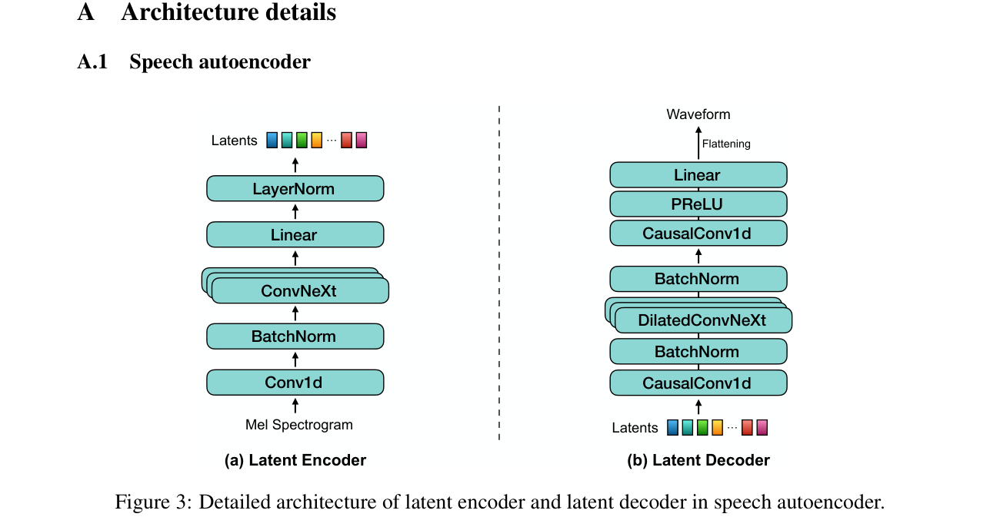
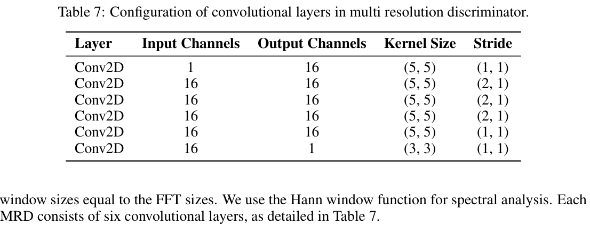
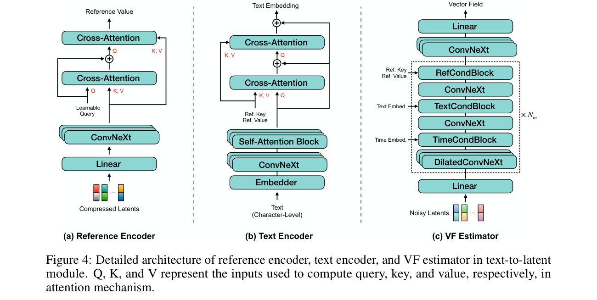
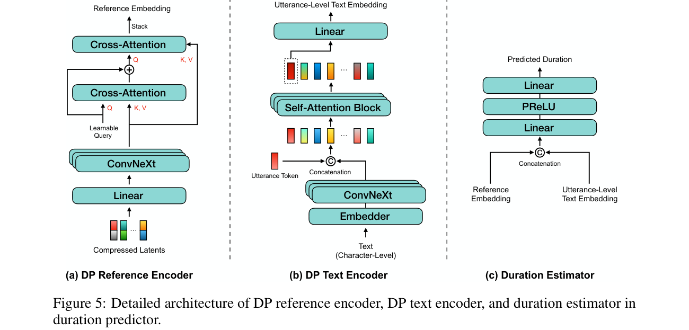
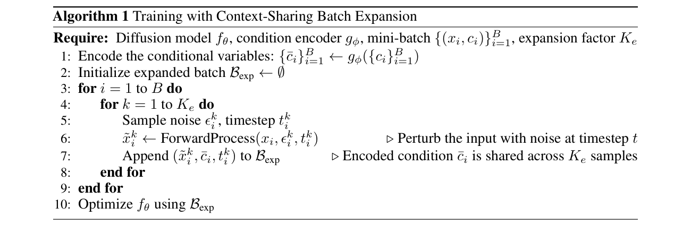
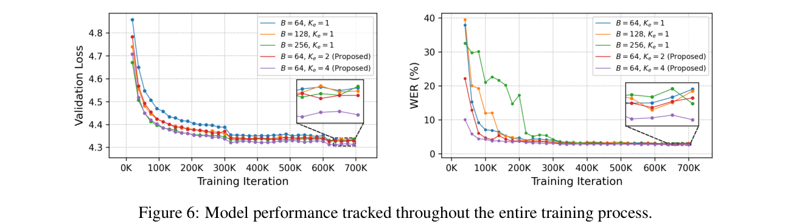

SupertonicTTS: Appendix — Architecture, Optimization, and Algorithm Details

语音自编码器的详细架构如图 3 所示。潜在编码器和潜在解码器均基于 Vocos 架构 [56]，主要由 ConvNeXt 块 [40] 组成，但针对语音自编码器的需求进行了若干关键修改。
潜在编码器的第一个卷积层，后接批量归一化，将228维的梅尔频谱图输入转换为隐藏表示。随后通过一系列 ConvNeXt 块逐层下采样特征维度，最终输出24维潜在表示，序列长度从 $T$ 缩减为 $T/6$（$K_c=6$）。每个 ConvNeXt 块包含：深度可分离7×1卷积、LayerNorm、Linear层（将通道维度扩展4倍）、GELU 激活、以及另一个 Linear 层（将维度恢复至原始大小）。整个编码器的总参数量约为12.5M。
潜在解码器以因果方式构建，以支持流式推理。它以卷积层+批量归一化开始，将24维潜在表示转换为隐藏表示。随后使用因果膨胀 ConvNeXt 块（DilatedConvNeXt）逐步上采样时间维度，从 $T/6$ 恢复至原始 $T$。因果膨胀 ConvNeXt 块使用因果卷积（零填充仅在左侧）和膨胀率递增的深度可分离卷积。最终，通过 Flattening 操作和 Linear 层加 PReLU 激活将隐藏表示映射到波形输出（44.1 kHz）。整个解码器的总参数量约为12.5M。
采用 HiFi-GAN [35] 中引入的多周期判别器（MPDs）的轻量化版本。每个 MPD 由5个带有 LeakyReLU 激活的二维卷积层组成，每个层使用不同的周期参数（2, 3, 5, 7, 11）。此外还使用多分辨率判别器（MRDs），配置如表 7 所示。

MRD 使用 Hann 窗函数进行频谱分析，窗口大小等于 FFT 大小。每个 MRD 由6个卷积层组成，并使用权重归一化 [50] 和 LeakyReLU 激活。共使用3个 MRD，分别配置 FFT 大小为 2048、1024、512，窗口大小分别为 2048、1024、512，跳步大小分别为 512、256、128。

文本-潜在模块的详细架构如图 4 所示。每个组件都经过精心设计以实现高效条件注入。
参考编码器由一个 Linear 层、6个 ConvNeXt 块和2个交叉注意力层组成。Linear 层将压缩潜在表示（来自参考语音）转换为隐藏表示。6个 ConvNeXt 块用于提取深层特征。2个交叉注意力层将参考信息编码为键和值，供 VF 估计器使用。第一个交叉注意力层使用50个可学习查询，第二个使用10个。两个交叉注意力层均使用3个注意力头和0.1的 dropout 率。
文本编码器由一个嵌入器（embedder）、6个 ConvNeXt 块、4个自注意力块和2个交叉注意力层组成。嵌入器将字符级文本输入转换为隐藏表示。4个自注意力块使用4个注意力头和0.1的 dropout 率。2个交叉注意力层将文本信息编码为键和值，同样供 VF 估计器使用。第一个交叉注意力层使用50个可学习查询（3头，0.1 dropout），第二个使用10个（3头，0.1 dropout）。
VF 估计器中的第一个 Linear 层将144维噪声潜在表示映射到256维隐藏表示。随后通过3个条件块（RefCondBlock、TextCondBlock、TimeCondBlock）注入条件信息。每个条件块包含一个 ConvNeXt 块和一个条件注入机制（交叉注意力或时间嵌入）。VF 估计器的核心是 $N_m$ 个重复的 ConvNeXt + DilatedConvNeXt 块，用于建模潜在表示的时间依赖性。最终通过 Linear 层输出向量场预测。每个交叉注意力层由3个 Linear 层组成，输入输出维度相同，第一个交叉注意力层使用50个可学习查询，第二个使用10个，均使用3个注意力头。

时长预测器的详细架构如图 5 所示。由于预测总时长比预测帧级时长更简单，时长预测器的架构相对轻量化。
DP 参考编码器与文本-潜在模块中的参考编码器共享相同的架构（Linear层 → 6个ConvNeXt块 → 2个交叉注意力层），但使用不同的初始化和训练参数。它从压缩潜在表示提取参考嵌入，用于时长预测的条件。
DP 文本编码器由一个嵌入器、6个 ConvNeXt 块、2个自注意力块和一个 Linear 层组成。嵌入器将字符级文本转换为隐藏表示。自注意力块使用4个注意力头。最终 Linear 层将隐藏表示映射到语句级文本嵌入。
时长估计器由两个 Linear 层和一个 PReLU 激活组成。第一个 Linear 层保持输入和输出维度相同（将拼接的参考嵌入和语句级文本嵌入映射到隐藏空间），第二个 Linear 层将隐藏表示映射到单个时长预测值。
语音自编码器的训练在 GAN [12] 框架内进行。生成器损失函数定义为：
$$L_G = \lambda_{recon} L_{recon}(G) + \lambda_{adv} L_{adv}(G; D) + \lambda_{fm} L_{fm}(G; D)$$判别器损失为：
$$L_D = L_{adv}(D; G)$$其中 $G$ 代表生成器（解码器），$D$ 表示判别器组合。重建损失 $L_{recon}$ 使用 L1 距离计算。对抗损失定义为：
$$L_{adv}(G; D) = \mathbb{E}_{x \sim p(x)} [(D(G(x)) - 1)^2]$$$$L_{adv}(D; G) = \mathbb{E}_{x \sim p(x)} [(D(G(x)) + 1)^2 + (D(x) - 1)^2]$$特征匹配损失 $L_{fm}$ 定义为：
$$L_{fm}(G; D) = \frac{1}{L} \sum_{l=1}^{L} \|\phi_l(G(x)) - \phi_l(x)\|_1$$其中 $L$ 是判别器层数总数，$\phi_l(\cdot)$ 是第 $l$ 层的特征表示。损失系数设置为 $\lambda_{recon} = 45$、$\lambda_{adv} = 1$、$\lambda_{fm} = 2$。
语音自编码器使用 AdamW 优化器训练 1.5M 迭代，学习率 $1 \times 10^{-4}$，批量大小64。使用余弦退火学习率调度，预热步数500。判别器使用相同优化器配置，但学习率 $2 \times 10^{-4}$。
我们提供上下文共享批量扩展的伪算法如算法 1 所示。

核心思想：对齐学习更需要"同一文本-语音对的多种噪声视角"而非"更多不同的文本-语音对"。条件只需编码一次（$g_\phi(c)$），多个噪声采样共享条件计算，从而在计算效率上实现相当于扩大批量但不需要额外内存开销。
SupertonicTTS 在推理时使用 Euler 方法合成语音。通过调整函数评估次数（NFE），可以在推理速度和合成质量之间进行权衡。Table 8 展示了不同 NFE 下的性能对比：
| NFE | RTF ↓ | WER ↓ | SIM ↑ | NISQA ↑ | |
|---|---|---|---|---|---|
| GT | - | - | 2.181 | 0.677 ± 0.006 | 4.070 ± 0.029 |
| 4 | 0.006 | 11.43 | 0.335 ± 0.003 | 2.623 ± 0.020 | |
| 8 | 0.011 | 2.818 | 0.472 ± 0.003 | 3.916 ± 0.014 | |
| 16 | 0.019 | 2.679 | 0.476 ± 0.003 | 3.994 ± 0.014 | |
| 32 | 0.037 | 2.63 | 0.480 ± 0.003 | 4.04 ± 0.02 |
结果表明：NFE 从4增加到32时，WER从11.43急剧降至2.63，SIM和NISQA也随之持续提升。32步 NFE 是推荐配置，提供最佳的质量-速度平衡。

图 6 展示了整个训练过程中的验证损失和 ASR 结果。增大扩展因子 $K_e$ 不仅加速收敛，还在最终 WER/CER 上优于相应增大的批量 $B$。